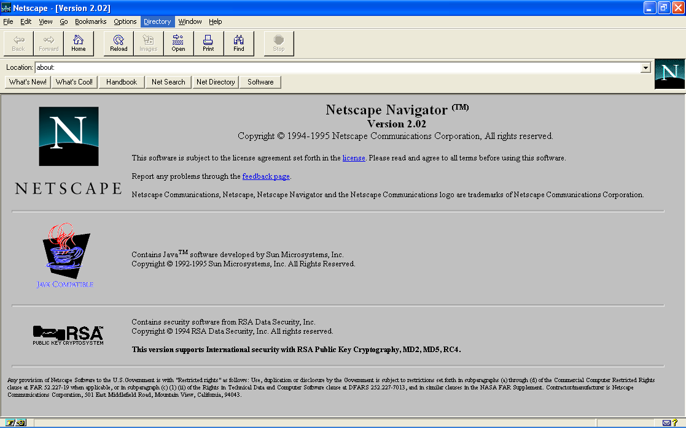

The Web Up Close
How Web Apps Work
Watch & Learn
- How The Backend Works (SuperSimpleDev, 14 min)
- RESTful APIs in 100 Seconds (Fireship, 12 min)
- Learn JSON in 10 Minutes (Web Dev Simplified, 10 min)
Video Quiz
In the SuperSimpleDev video, what does he say the frontend is responsible for?
In the SuperSimpleDev video, what is the “request-response cycle” he describes?
In the Fireship video, what does REST stand for?
In the Fireship video, which HTTP method is used to read or retrieve data from an API?
In the Web Dev Simplified video, what two data structures does JSON support?
In the Web Dev Simplified video, what JavaScript method does he use to convert a JSON string into a JavaScript object?
Theory

Static Sites vs. Dynamic Web Apps
The earliest websites were static pages — plain HTML files stored on a server. Every visitor saw the exact same content, and to change anything the developer had to edit the file by hand and re-upload it. Think of a static site like a printed poster: once it’s up, it stays the same until someone replaces it.
A dynamic web application is different. When you open YouTube, Instagram, or Google Maps, the page you see is assembled on the fly. The server reads your account data, pulls fresh content from a database, and builds a unique page just for you. That’s why your YouTube homepage looks nothing like your friend’s — the app personalises it in real time.

Frontend vs. Backend
Every web app has two halves. The frontend (also called the “client side”) is everything that runs inside your browser: the HTML structure, the CSS styling, and the JavaScript code that makes buttons respond, animations play, and forms validate before you hit “Submit.”
The backend (or “server side”) is the code you never see. It runs on a remote server and handles the heavy lifting: checking passwords, querying databases, processing payments, and deciding what data to send back to the frontend. Popular backend languages include Python, Node.js (JavaScript on the server), Ruby, and Java.
Think of a restaurant: the frontend is the dining room where you sit, read the menu, and place an order. The backend is the kitchen where the chef prepares your meal and sends it out. Both halves need each other, but they have very different jobs.
APIs: How the Frontend Talks to the Backend
An API (Application Programming Interface) is a set of rules that lets two programs talk to each other. In a web app, the frontend sends a HTTP request to the backend’s API, and the backend replies with the requested data. The frontend never touches the database directly — it always goes through the API.
Most modern web apps use
RESTful APIs. REST
organises data into “resources” (like /users or /posts)
and uses standard HTTP methods to work with them:
GET— read a resource (fetch a list of posts)POST— create a new resource (publish a new post)PUT— update an existing resource (edit a post)DELETE— remove a resource (delete a post)
When you scroll your social media feed, your browser quietly fires GET requests
to an API endpoint. The server queries the database, picks the next batch of posts, and
sends them back — all without reloading the page. This is called
AJAX
(Asynchronous JavaScript and XML), and it’s the reason modern web apps feel so smooth.
JSON: The Universal Data Format of the Web
When an API sends data, it needs a format both humans and machines can read. JSON (JavaScript Object Notation) has become that format. It looks like this:
{
"city": "London",
"temperature": 14,
"unit": "celsius",
"conditions": "partly cloudy"
}
JSON stores data as key-value pairs inside curly braces. Keys are always strings in double
quotes; values can be strings, numbers,
booleans
(true/false), arrays (ordered lists in square brackets), other
objects, or null. That simplicity is why nearly every programming language can
read and write JSON.
In JavaScript, you convert a JSON string into a usable object with
JSON.parse(), and turn an object back into a JSON string with
JSON.stringify(). The browser’s built-in
Fetch API
makes it easy to request JSON from any public API:
const response = await fetch("https://api.open-meteo.com/v1/forecast?latitude=51.5&longitude=-0.1¤t_weather=true");
const data = await response.json();
console.log(data.current_weather.temperature);That tiny snippet connects to a real weather API, downloads the JSON response, and prints the current temperature. You’ll do exactly this in today’s practice task.
Theory Quiz
What is the main difference between a static website and a dynamic web application?
In the restaurant analogy, which part of a web app is “the kitchen”?
Which HTTP method would you use to delete a blog post through a RESTful API?
In JSON, what type of brackets surround an ordered list (array)?
Which JavaScript method converts a JSON string into a JavaScript object?
Build: “Weather Dashboard”
Create an HTML + CSS + JS page that fetches live weather data from the Open-Meteo API (free, no API key needed) and shows the current weather for any city the user types in.
How it works:
- The user types a city name into a text field and clicks “Search.”
- Your JavaScript uses the Open-Meteo Geocoding API to turn the city name into latitude and longitude.
- With those coordinates, it calls the Open-Meteo Forecast API to get the current weather.
- The page displays the city name, temperature, wind speed, and a weather description.
Requirements:
- An
<input>for the city name and a “Search” button - Use
fetch()to call the Geocoding API:https://geocoding-api.open-meteo.com/v1/search?name=CITY&count=1 - Use
fetch()again with the returned latitude/longitude to call:https://api.open-meteo.com/v1/forecast?latitude=LAT&longitude=LON¤t_weather=true - Parse the JSON response and display: city name, temperature (°C), wind speed (km/h), and wind direction
- Show a friendly error message if the city is not found
- Style the dashboard with a card layout, readable fonts, and a clean look
Helpful code snippet:
async function getWeather(city) {
// Step 1: geocode the city name
const geoRes = await fetch(
`https://geocoding-api.open-meteo.com/v1/search?name=${city}&count=1`
);
const geoData = await geoRes.json();
if (!geoData.results) {
alert("City not found!");
return;
}
const { latitude, longitude, name } = geoData.results[0];
// Step 2: fetch the weather
const wxRes = await fetch(
`https://api.open-meteo.com/v1/forecast?latitude=${latitude}&longitude=${longitude}¤t_weather=true`
);
const wxData = await wxRes.json();
console.log(name, wxData.current_weather);
}Solve it in JSFiddle:
Open JSFiddlePaste your HTML into the HTML panel, CSS into the CSS panel, and JS into the JavaScript panel. Click “Run” to see the result!